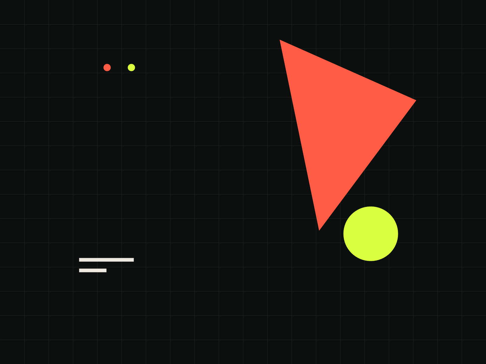

Field notes
Short observations from the edge of code and everyday life.
PERSONAL INDEX / 2026
A quiet place for experiments, notes, and useful things.

I am cyj-hashtag. This page is a small, living index of what I am learning, making, and keeping close.
The public archive is intentionally quiet for now. New pieces will find their way here when they are ready.
Short observations from the edge of code and everyday life.
Experiments that turn a simple rule into a useful shape.
A placeholder for the thing that has not found its final form yet.